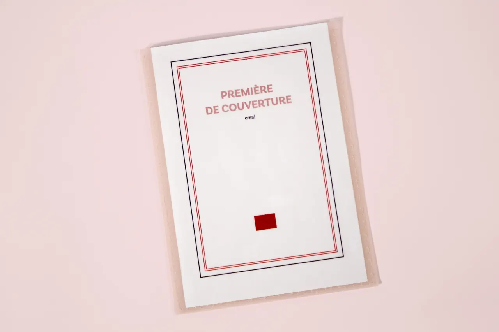
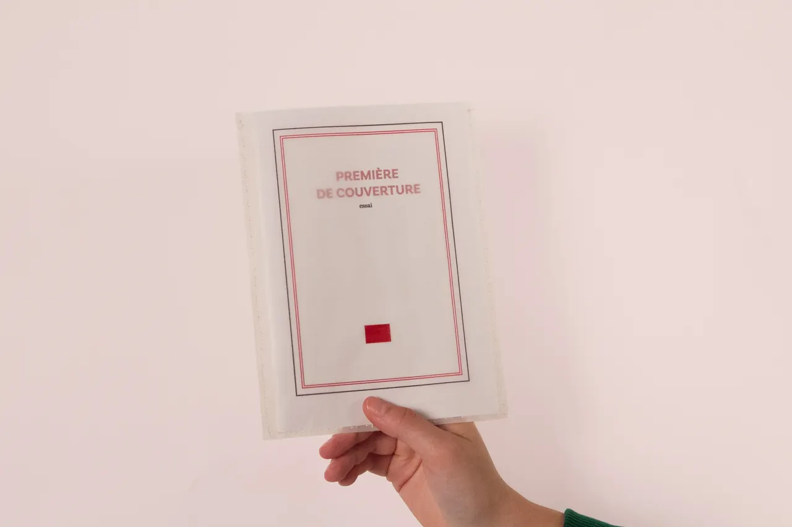
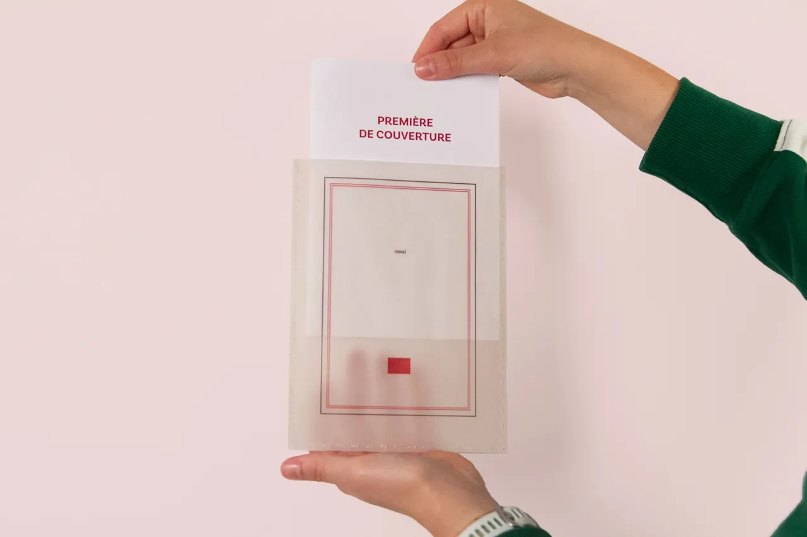
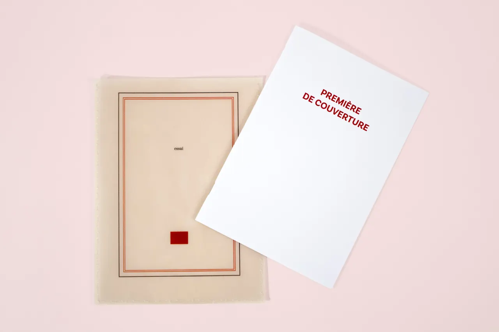
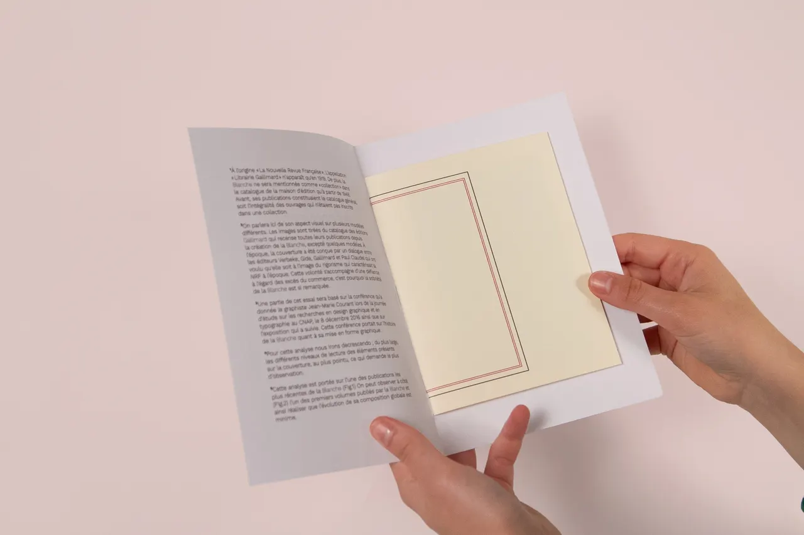
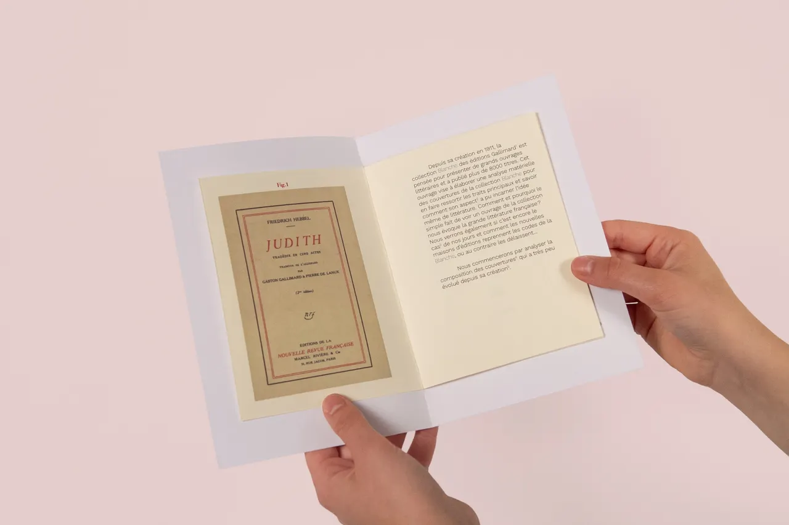
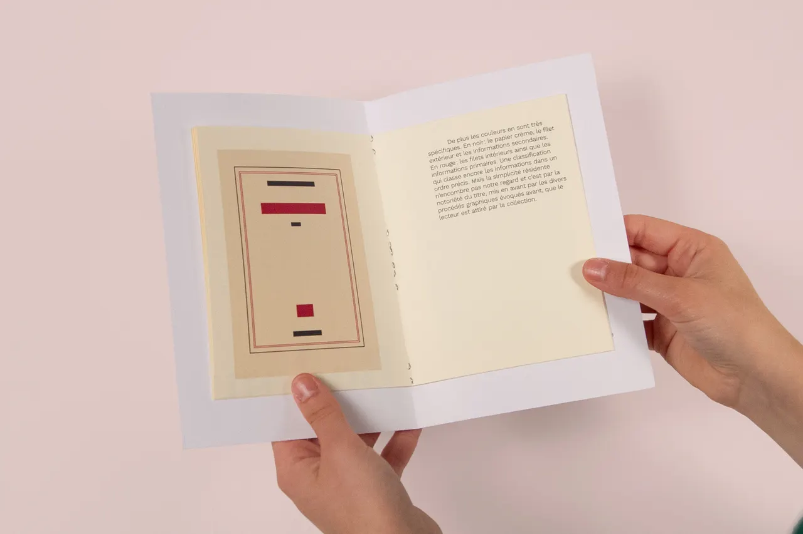
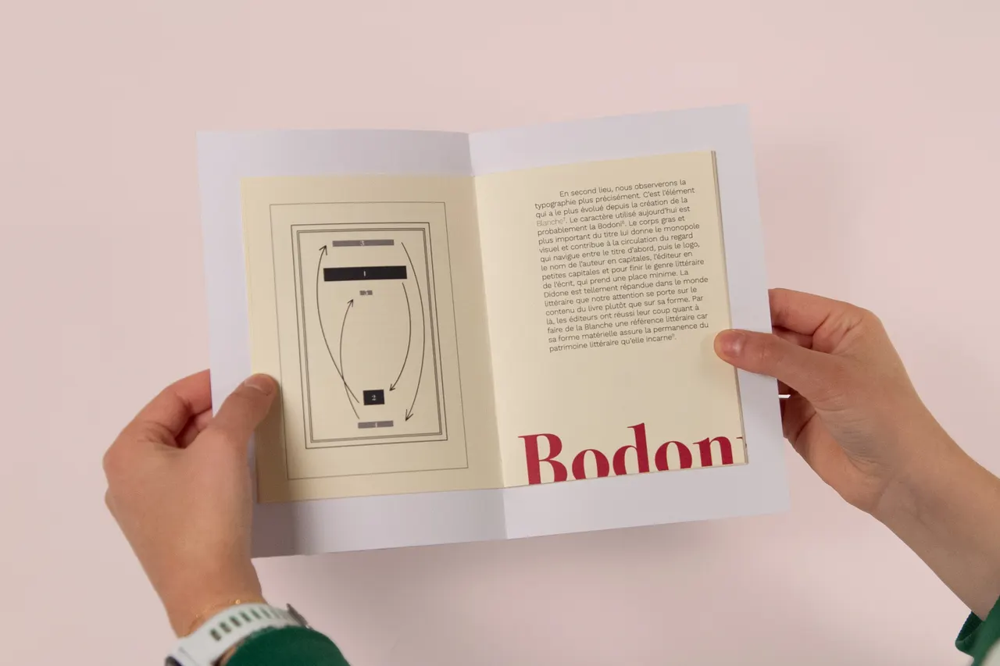
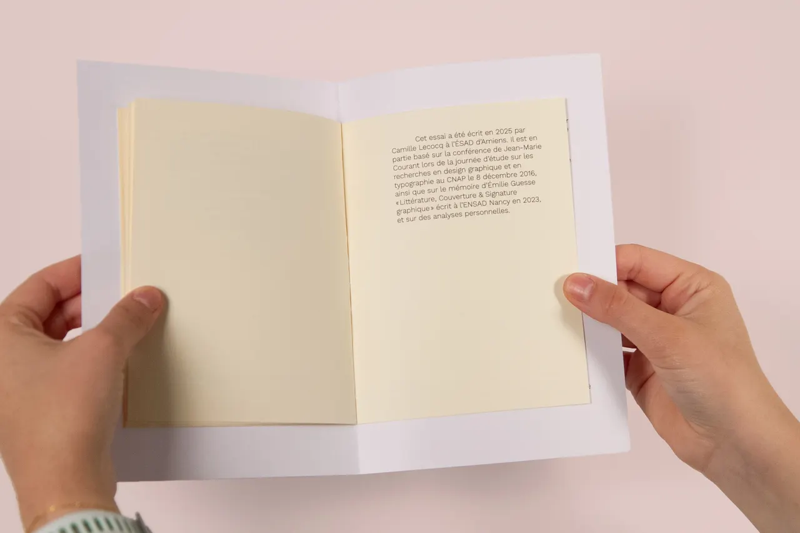
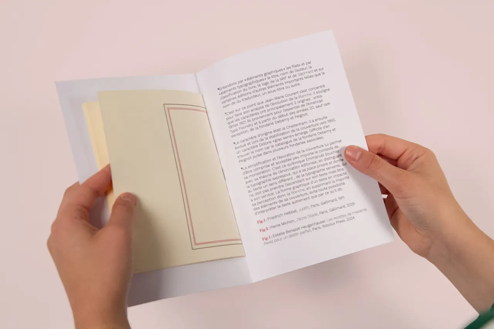

PREMIÈRE DE COUVERTURE
- 14 × 20,5 cm
- 2025
Ce livret présente une analyse matérielle des couvertures de la collection « Blanche » des éditions Gallimard pour en faire ressortir les traits principaux. L’enjeu est de savoir comment le simple fait de voir un ouvrage de la collection nous évoque la grande littérature.

















